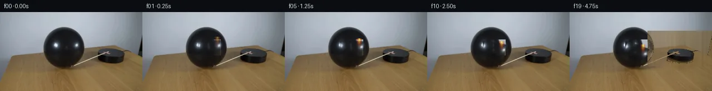

![首帧]()

Round 00
2026-11-05T23:45:44.024519+00:00像素候选变化代码 +379/−0inspection 更新
pixels 14c798fedd68a13e · code 81bebe1a4f1060e0
查看本轮 generate.py 真实 diff
--- previous/generate.py
+++ current/generate.py
@@ -0,0 +1,379 @@
+"""
+PixelWorld-Text Animation Generator
+Case: Lit match on black platform rotates clockwise and touches black balloon.
+
+Method: Sprite-based rotation with inpainting and procedural flame/balloon effects.
+All pixel operations use numpy/scipy only. No external AI models or engines.
+"""
+import numpy as np
+from PIL import Image
+from scipy.ndimage import affine_transform, map_coordinates
+import os, sys
+
+# ── Configuration ──────────────────────────────────────────────
+H, W = 144, 256
+N_FRAMES = 20
+FPS = 4
+WORKSPACE = os.path.dirname(os.path.abspath(__file__))
+TMP = os.path.join(WORKSPACE, '.tmp')
+os.makedirs(TMP, exist_ok=True)
+
+# ── Load first frame ──────────────────────────────────────────
+first = np.array(Image.open(os.path.join(WORKSPACE, 'first_frame.png'))).astype(np.float32)
+assert first.shape == (H, W, 3), f"Expected (144,256,3), got {first.shape}"
+
+# ── Scene Measurements ────────────────────────────────────────
+# Platform: x=84-100, y=32-100, dark vertical stand with specular highlight at (100,60)
+# Balloon: x=140-255, y=34-98, large dark rounded shape
+# Match pivot: where match attaches to platform
+# Match tip: end of match stick where flame is
+
+# Pivot point (match attachment on platform)
+PIVOT_Y, PIVOT_X = 64, 96
+
+# Match extends from pivot toward balloon
+# Tip at frame 00: approximately (135, 62) — slightly upward from horizontal
+TIP_Y0, TIP_X0 = 63, 135
+
+# Match length
+MATCH_LEN = np.sqrt((TIP_X0 - PIVOT_X)**2 + (TIP_Y0 - PIVOT_Y)**2)
+INITIAL_ANGLE = np.arctan2(TIP_Y0 - PIVOT_Y, TIP_X0 - PIVOT_X) # ~ -1.5° (slightly up)
+
+# Balloon contact region
+BALLOON_LEFT = 140
+BALLOON_TOP = 34
+BALLOON_BOTTOM = 98
+BALLOON_RIGHT = 255
+
+# ── Extract match sprite region ───────────────────────────────
+# We define a bounding box around the match for sprite extraction
+# The match occupies roughly x=88-150, y=45-85
+SPRITE_X1, SPRITE_X2 = 88, 150
+SPRITE_Y1, SPRITE_Y2 = 45, 85
+SPRITE_H = SPRITE_Y2 - SPRITE_Y1
+SPRITE_W = SPRITE_X2 - SPRITE_X1
+
+# Pivot relative to sprite top-left
+PIVOT_SX = PIVOT_X - SPRITE_X1
+PIVOT_SY = PIVOT_Y - SPRITE_Y1
+
+# ── Create clean background (scene without match) ─────────────
+# We'll inpaint the match region using horizontal interpolation from surrounding pixels
+def create_clean_background(img):
+ """Remove match from the scene by interpolating from surrounding pixels."""
+ clean = img.copy()
+
+ # Define match removal region: x=100-140, y=50-78
+ # Fill with horizontal interpolation from left and right sides
+ for y in range(50, 79):
+ for x in range(100, 141):
+ # Sample colors from left (platform area) and right (balloon area)
+ left = max(84, x - 20)
+ right = min(254, x + 20)
+
+ # Check if we can sample from beyond the match region
+ left_valid = left < 100 # left of match
+ right_valid = right > 140 # right of match (balloon)
+
+ if left_valid and right_valid:
+ # Blend between platform color and balloon color
+ t = (x - 100) / 40.0 # 0 at platform edge, 1 at balloon edge
+ clean[y, x] = clean[y, left] * (1 - t) + clean[y, right] * t
+ elif left_valid:
+ clean[y, x] = clean[y, left]
+ elif right_valid:
+ clean[y, x] = clean[y, right]
+ else:
+ # Fallback: use table wood color
… diff truncated; 292 more lines …